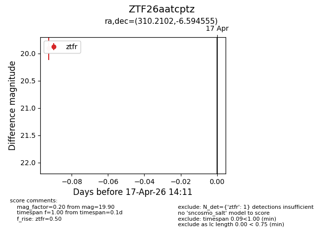
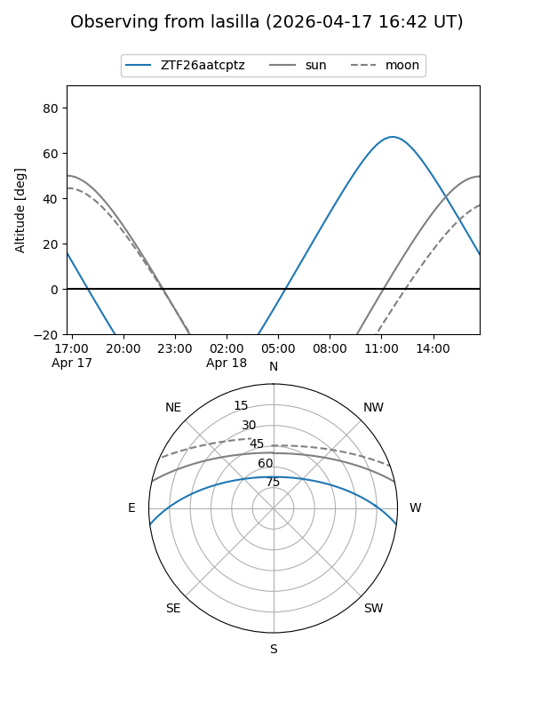
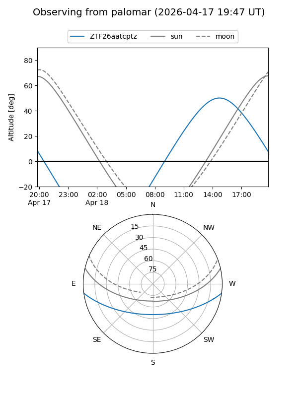

ZTF26aatcptz
Target ZTF26aatcptz at 2026-04-17 14:18
Aliases and brokers:
FINK: link
Lasair: link
ALeRCE: link
alt names
ZTF26aatcptz (ztf,fink_ztf)
Coordinates:
equatorial (ra, dec) = 310.2102,-6.59455
equatorial (HMS+DMS) = 20:40:50.45,-06:35:40.40
galactic (l, b) = (39.7760,-27.29383)
Flags:
Photometry:
last ztfr=19.90
1 ztfr detections
Lightcurve

Visibility


Additional plots